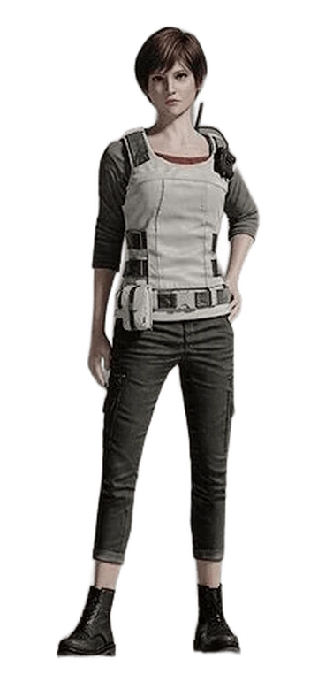
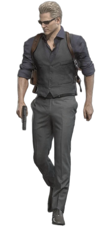
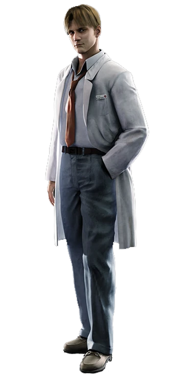
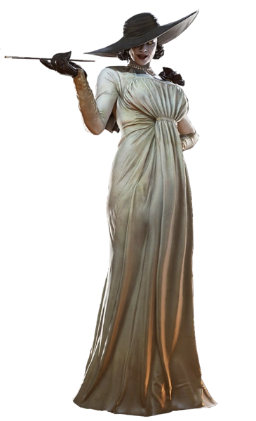
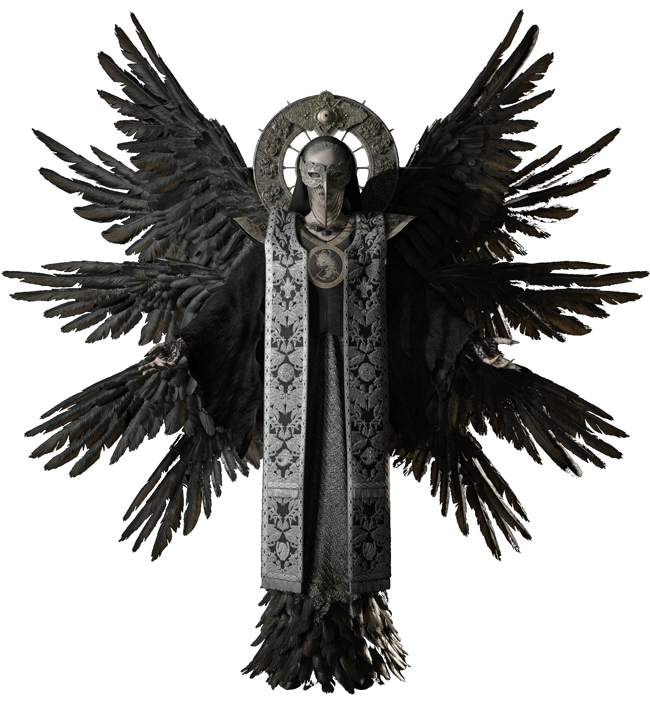

Bohaterowie
Chris Redfield

Weteran S.T.A.R.S. i jeden z pierwszych świadków działalności Umbrelli. Chris walczył z biozagrożeniami od samego początku – od rezydencji Spencera po misje na całym świecie jako członek BSAA. W Resident Evil 5 stawił czoła swojemu dawnemu towarzyszowi, Albertowi Weskerowi. Z wiekiem stawał się bardziej bezwzględny, ale jego motywacją pozostała ochrona niewinnych i eliminacja bioterroryzmu.
Jill Valentine

Była członkini oddziału S.T.A.R.S. i specjalistka od rozbrajania bomb. Wydarzenia w rezydencji Spencera oraz dramatyczna ucieczka z Raccoon City uczyniły ją ikoną przetrwania. W Resident Evil 3 stawiła czoła Nemesisowi – jednej z najbardziej niebezpiecznych broni Umbrelli. Później brała udział w wielu misjach BSAA, poświęcając się walce z globalnymi zagrożeniami biologicznymi. Jest symbolem odwagi i niezłomności.
Leon S. Kennedy

Były policjant z Raccoon City, który w swoją pierwszą noc służby został rzucony w środek apokalipsy zombie. Wydarzenia te ukształtowały go jako agenta rządowego do zadań specjalnych. Leon brał udział w misji ratunkowej córki prezydenta w Hiszpanii (Resident Evil 4) i ścierał się z zagrożeniami na najwyższym szczeblu światowej polityki. Jego zimna kalkulacja i lojalność czynią go jednym z najtwardszych protagonistów serii.
Claire Redfield

Siostra Chrisa, studentka i motocyklistka, która przypadkiem trafiła do piekła w Raccoon City w poszukiwaniu brata. Dzięki determinacji przetrwała katastrofę i ocaliła młodą Sherry Birkin. Claire nie została żołnierzem, lecz poświęciła się działalności humanitarnej w organizacji TerraSave. Występowała m.in. w Resident Evil Code: Veronica oraz Revelations 2, udowadniając, że nie trzeba mieć wojskowego szkolenia, by walczyć z piekłem.
Ethan Winters

Zwykły człowiek wplątany w koszmar biologiczny, którego życie zmieniło się na zawsze, gdy wyruszył do Luizjany, by odnaleźć swoją zaginioną żonę, Mię. Jego historia rozgrywa się w Resident Evil 7 oraz Resident Evil Village, gdzie stawia czoła przerażającym mutantom i nadnaturalnym zagrożeniom. Mimo braku wojskowego czy policyjnego doświadczenia, Ethan wykazuje niezwykłą odwagę i determinację, by chronić bliskich i przetrwać, co czyni go jednym z najbardziej „ludzkich” i emocjonalnie angażujących bohaterów serii.
Ada Wong

Tajemnicza kobieta, agentka pracująca dla różnych frakcji. Często pojawia się na drodze Leona, ratując go z opresji – ale nigdy nie zdradza swoich prawdziwych intencji.
Rebecca Chambers
Najmłodsza członkini oddziału Bravo zespołu S.T.A.R.S. Ekspertka medyczna, która przetrwała wydarzenia z Resident Evil 0.
Główni Wrogowie
Albert Wesker
Były członek S.T.A.R.S. i główny antagonista serii. Obsesja na punkcie siły doprowadziła go do zdrady i wykorzystania wirusów w celu osiągnięcia nadludzkiej mocy.
William Birkin
Naukowiec Umbrelli odpowiedzialny za stworzenie wirusa G. Po infekcji sam przemienił się w potwora, który ścigał Leona i Claire w Resident Evil 2.
Nemesis

Bioorganiczna broń stworzona przez Umbrellę w celu eliminacji członków S.T.A.R.S. Niezwykle wytrzymały, inteligentny i wyposażony w broń palną – nieustannie ściga Jill Valentine.
Lady Dimitrescu
Jedna z czterech władczyń podległych Matce Mirandzie w Resident Evil Village. Wysoka arystokratka o wampirycznych cechach i brutalnym temperamencie.
Mother Miranda
Główna antagonistka Resident Evil Village. Kultystka i naukowczyni, która dążyła do wskrzeszenia córki poprzez eksperymenty z megamycetem.